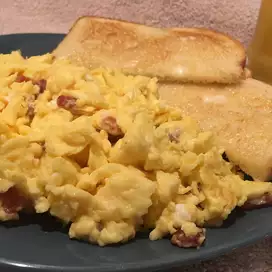

FRIED EGGS WITH TOAST
INGREDIENTS
- butter
- 3 eggs
- 1 or two slices of bread
- cheese
STEPS
- heat some butter on pan to coat pan, low heat
- if scrambled eggs are desired, crack eggs in container, add a small amount of water, and beat thoroughly
- bread goes in the toaster sometime around here, the timing is tricky
- get egg guts on pan, turn up heat
- eggs will cook, prepare any additional food and watch toast
- when eggs start to become solid, i can use a spatula to move stuff around, if eggs aren't beet or an omelet effect is desired, I can flip the eggs in the pan
- as eggs start to finish i can add my cheese, and check my toast
- turn off heat when eggs aren't gross, keep in pan while toast finishes
- when toast is done, butter the toast, then pour cooked eggs onto toast for maximum enjoyment